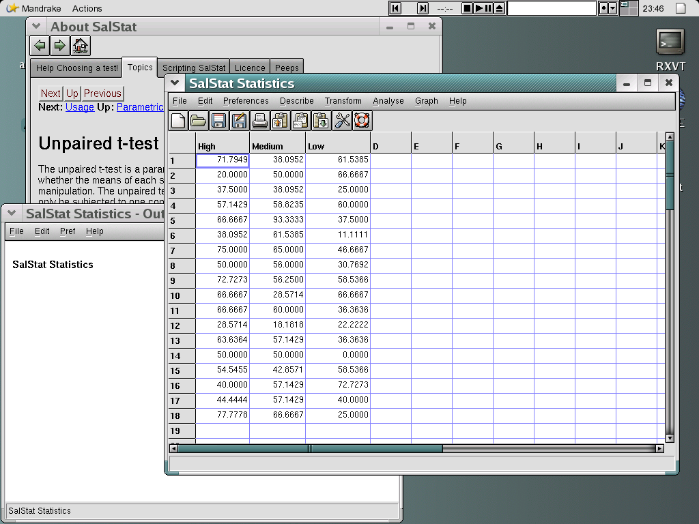

SalStat statistics is a small application designed for the rapid analysis of scientific data. There is a special emphasis upon the sciences like psychology.
It is available under the terms of the GNU General Public License (the ``GPL''), and a copy is present both with the program code, and in the program itself (use the menu, click on ``help'', then ``about'', and click on the tab marked ``license''. There is also a copy in the appendix of this document). In short this means that you can do what you want with the source code - change it, sell it, give it away for free, but you must also make the source code available for anyone upon request should you distribute your changes, or change the license. By the way, it costs you nothing unless you want to pay!
If you have ever used a statistics package before (like SPSS or StatView), you may be able to just start the program and be productive in a short space of time: It has been designed to be as simple as possible. No-one claims that statistics is a simple subject, but I wrote this program to be as transparent as possible to the user.
In case you are interested, it is written in the language of Python (http://www.python.org) which is very easy to learn and yet very powerful. The GUI widgets (the things you see on the screen) were created using the wxPython toolkit (http://www.wxpython.org), one of the coolest GUI toolkits around. Thanks to everyone who helped make Python and wxPython what they are (see the appendices for more information).

SalStat in action on GNU/Linux